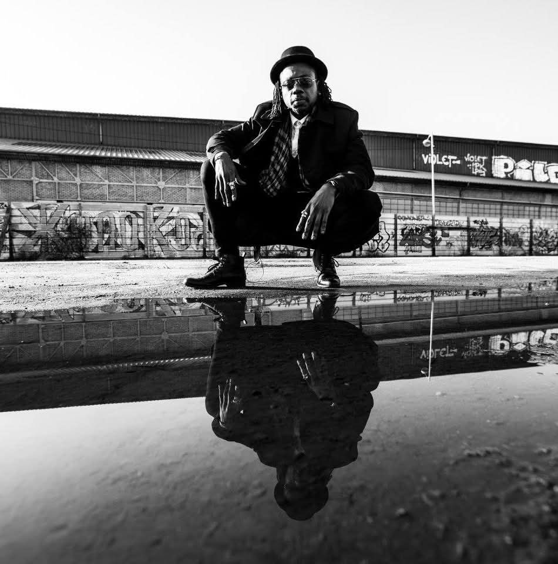

Artiste plasticien · Nancy
« Je crois en un art qui ne se contente pas d'être regardé, mais ressenti »
Découvrir les œuvres →« L'art est ma prière silencieuse, la toile mon sanctuaire. »— Kaz Ahmed Koné

Né à Nice, bercé par les rythmes ensoleillés de la Côte d'Ivoire des années 80, Kaz Ahmed Koné est un artiste plasticien autodidacte installé à Nancy. Peinture, numérique, upcycling, sculpture — son art pluridisciplinaire est un voyage entre tradition africaine et modernité européenne.
Son œuvre invite le spectateur à devenir explorateur de ses textures, contrastes et symboles. Une ode à la diversité et à l'innovation.
Lire la biographie